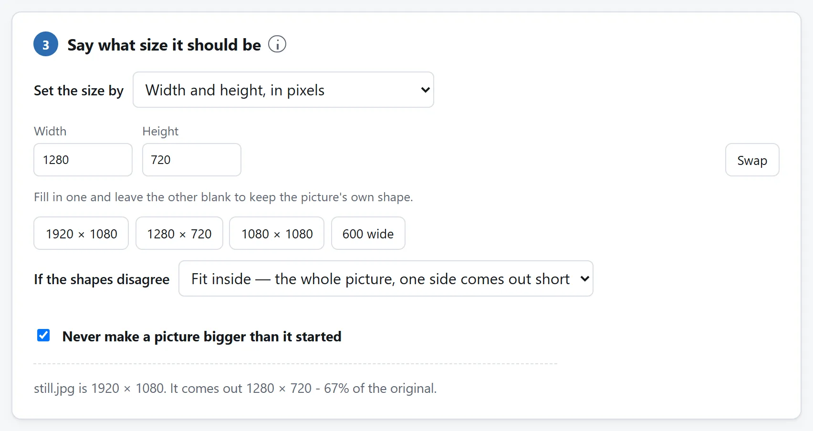

简短的答案
- 取帧。打开视频取帧工具，放入视频，沿文件实际帧列表定位。保存为 PNG，先避免额外的有损编码。
- 安排画面。把 PNG 放进图片尺寸工具，按平台比例裁切，选择适合原图和目的地的尺寸。YouTube 当前建议普通视频用 16:9，Shorts 用 9:16。下面分别说明。
- 满足大小限制。最后用图片压缩器，以平台当前限制为目标，并留余量。照片型 YouTube 缩略图选 JPEG。目的地要求 JPG 或 PNG 时，不要保留 Auto。
这条链上没有任何一环上传任何东西——视频还没发布时这一点很要紧，而封面图之所以要做，恰恰是因为视频还没公开。
在真实大小下能看懂的封面
上传视频选能说明内容的帧，例如完成品、抬头的讲者或动作前一刻。来源字幕在小预览里也要清楚。这些工具只捕获、裁剪和压缩，标题或其他图形需在 PNG 捕获和最终压缩之间用图片编辑器加入。
网页视频同一静图可作播放前海报，匹配播放器形状和显示尺寸，在手机检查是否仍说明内容。演示封面也在实际幻灯片布局测试，观众看到的不一定是全尺寸 PNG。
为什么逐帧胜过暂停
暂停播放器再截屏，输两回。暂停停在播放器停得下来的地方——最近的一处，而不是你想要的那一帧——而截屏是给播放器拍的照片：它的分辨率、它的界面、它的色彩处理，而不是文件本身的。
抽帧工具走的是文件自己的帧列表，双向都能一帧一帧走，交到你手上的是解码出的帧本身，视频的完整分辨率。在那个瞬间前后各找四分之一秒，通常就是封面图住的地方：两帧显眼画面之间的那一帧，动势读得出来，又没有一处糊掉。
即使最终缩略图用 JPEG，取帧也先保存为 PNG。PNG 保留画布上的静态像素，不增加一轮有损编码。之后只在最后按大小预算压缩一次，避免损失累积。

平台的算术
先裁切再压缩，原因与照片指南相同。像素就是预算。裁成 16:9，再缩到 1280×720，是一个可用的小尺寸示例，不是 YouTube 当前建议。缩略图说明现在建议普通视频用 3840×2160，Shorts 用 2160×3840，可接受格式举例包括 JPG 和 PNG。桌面上传允许最大 50 MB，手机视频缩略图要低于 2 MB。检查实际上传方式的要求，不要只为达到建议数字放大小图。自定义上传需要已验证账号，Shorts 自定义上传当前使用电脑上的 YouTube Studio。
裁切框可以锁定 16:9 或 9:16，不用自己计算。把文字和脸放在中间三分之二内，因为信息流可能圆角裁边，右下角还会覆盖时长。

找不到那个瞬间时，来一张联系表
如果正确的瞬间藏在十分钟素材里的某处，抽帧工具的另一个模式每隔 N 秒存一张静帧，整批打包成 ZIP。像翻联系表一样翻这些静帧，记下最接近的那张的时间，再从那里逐帧走。这比来回搓进度条快，而且还给你留下一个候选文件夹，等哪天平台要另一种形状时用得上。
如果你每周都做这件事
这几步分住在三个页面上是有意为之：每个页面只做一件事，每一个都能独自证明没有任何东西离开你的电脑。但每一步都是开源的：MIT 许可证，每个工具一个文件夹，零依赖的 ES 模块，README 讲清解码器、重采样和字节目标的搜索。
如果封面图是每周的交付物，就把代码代理指向代码仓库，让它做出单页版：逐帧走、按你的平台预设裁剪、压到它的上限，一颗按钮。这些模块就是写来被读的，把它们带走，正是许可证存在的意义。